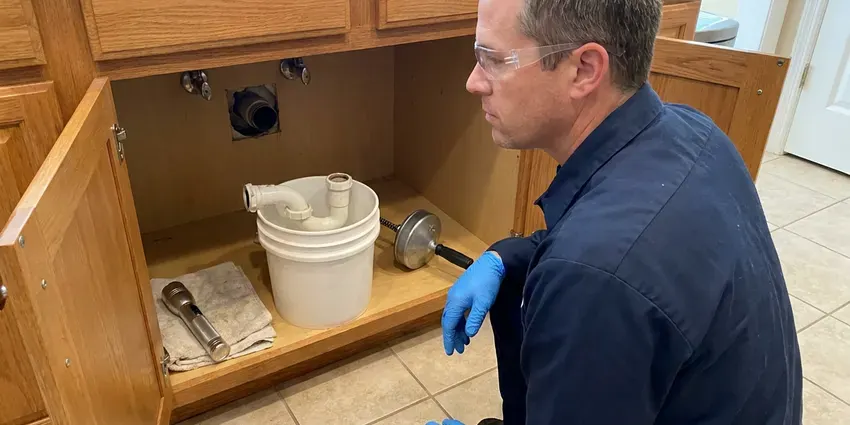

Foundation Leak Repair in South Hill, WA
Protect your property from the hidden dangers of foundation leaks. FHN Plumbing delivers professional foundation leak repair services throughout South Hill, WA.
- Expert Foundation Repair
- Fast Leak Detection
- Reroute or Direct Repair
- Licensed & Insured

Concerned About a Foundation Leak in South Hill, WA?
Schedule your service now and protect your home from water damage.
Foundation Leak Repair in South Hill, WA That Safeguards Your Home
FHN Plumbing specializes in diagnosing and repairing foundation leaks, a vital service for homes in South Hill, WA. Our team uses specialized tools like acoustic leak detectors and thermal imaging to pinpoint the exact source of water intrusion, whether it is from plumbing lines or exterior water runoff.
Our expertise includes:
- Repairing copper, PEX, and PVC lines effectively.
- Locating hidden leaks under concrete slabs.
- Long-lasting epoxy and hydraulic cement repairs

Additional Plumbing Repair Services in South Hill, WA
We offer expert plumbing repair services across South Hill, WA to stop leaks, clear blockages, and keep every fixture working the way it should.


Customers
Why Choose FHN Plumbing for Foundation Leak Repair in South Hill, WA?
Ignoring a foundation leak can lead to severe structural issues and mold growth in your home. Our team provides prompt and accurate repairs, protecting your investment and peace of mind.
- Lasting Solutions, Our repairs use high-quality materials such as waterproof sealants, epoxy injections, and concrete patching compounds designed to hold up in varying soil conditions.
- Licensed Plumbers, All our technicians are licensed and trained to meet Washington plumbing codes for your protection and peace of mind.
- Advanced Detection, We use acoustic leak detectors and thermal imaging to locate hidden leaks without unnecessary destruction.
Citywide Coverage
FHN Plumbing proudly serves every neighborhood of South Hill with timely and efficient foundation leak repair services. No matter where you are located within South Hill, our skilled technicians are ready to respond to your call.
Experienced Team
Each technician at FHN Plumbing undergoes ongoing training to stay current on foundation repair techniques and safety protocols. You can trust our experts to handle your foundation leak with precision and care.
Safety-First Approach
Before cutting concrete, we scan for post-tension cables, rebar and buried utilities. Cutting a post-tension cable is dangerous and costly, so we never skip this step.
Trusted Certified South Hill Plumbing Services Professionals
At FHN Plumbing, we take pride in providing certified plumbing services throughout South Hill, WA. Backed by recognized industry credentials, our experienced plumbers combine technical skill with genuine customer care. Whether it is repair, installation, or maintenance, we follow strict safety and quality standards to deliver lasting results you can trust.
Call Us Now PHCC Plumbing Contractor Recognition
PHCC Plumbing Contractor Recognition Better Business Bureau (BBB) Accreditation
Better Business Bureau (BBB) Accreditation Angi Certified Pro
Angi Certified Pro ISO 9001 Quality Management Certification
ISO 9001 Quality Management CertificationProfessional Foundation Leak Repair Services in South Hill, WA
Commercial Foundation Leak Repair in South Hill
FHN Plumbing also provides dedicated foundation leak repair services for commercial properties in South Hill. Business foundations often face different stresses and need specific approaches. We respect the need for minimal disruption to your operations and offer flexible scheduling. Our team handles everything from industrial slab leaks to extensive perimeter waterproofing for many kinds of commercial structures.

Exterior Foundation Leak Solutions in South Hill
Many foundation leaks originate from exterior factors like poor drainage, overflowing gutters, or saturated soil. We inspect your home's exterior to identify these culprits. Our solutions include grading adjustments, French drain installation, and downspout extensions to redirect water away from your foundation. Proper exterior water management is crucial for preventing hydrostatic pressure buildup against your foundation walls in South Hill and keeping water out.
Copper Pipe Leak Repair in South Hill, WA
Many older homes in South Hill, WA have copper water lines beneath their foundations, which can corrode over time due to soil conditions or water chemistry. Municipal water west of the mountains in Washington is generally soft, while supplies on the drier east side tend to run harder. When these copper pipes develop pinhole leaks or cracks, they require specialized repair. Our technicians repair or replace sections of damaged copper piping, ensuring a durable seal that withstands pressure and ground movement and helps prevent future leaks.
Basement Wall Sealing and Waterproofing in South Hill, WA
For homes with basements in South Hill, WA, wall leaks can be a real concern. We offer complete basement waterproofing services, including interior and exterior sealing. This may involve applying waterproof coatings, injecting cracks with polyurethane or epoxy, or setting up interior drainage systems. These measures prevent water from penetrating porous concrete and masonry, keeping your basement dry and healthy.
Slab Leak Detection & Repair in South Hill
Slab leaks are known for being difficult to detect, often showing subtle signs like warm spots on the floor or a sudden jump in your water bill. FHN Plumbing uses acoustic and infrared technology to accurately locate these hidden leaks under your concrete foundation. Once identified, we offer tailored repair solutions, whether it's a spot repair, re-routing, or pipe bursting, to restore your plumbing system in South Hill without extensive damage to your property.
Drain Line Leak Under Foundation in South Hill, WA
Leaks in drain lines under the foundation can be harder to detect because they are not under constant pressure. We use camera inspection and hydrostatic testing to locate cracks and separated joints. Repairs may involve tunneling, cutting the slab or pipe lining. We explain the trade-offs of each method.
Emergency Foundation Leak Service in South Hill
A sudden, major foundation leak can cause rapid and severe damage, requiring immediate attention. FHN Plumbing offers emergency foundation leak repair services in South Hill to handle urgent situations. Our rapid response team is equipped to assess the leak, isolate the damaged line, and make a temporary or permanent repair to limit water damage and protect your home's structural integrity, even after hours.

Crawl Space Foundation Leak Repair in South Hill, WA
Crawl space foundations can develop leaks from plumbing, groundwater, or HVAC condensation. These leaks can lead to wood rot, mold, and structural damage if not addressed quickly. Our team thoroughly inspects the crawl space and identifies the source of water intrusion. We then put in place solutions such as pipe repair, sump pump installation, or vapor barrier replacement to dry out and protect your crawl space in South Hill, WA from future moisture issues.
Foundation Leak Repair Near Me in South Hill, WA
When you search for "foundation leak repair near me" in South Hill, WA, FHN Plumbing is your local expert. We are very familiar with the plumbing and foundation challenges common to homes in our service area. Our quick response times and local knowledge mean we can get to your property quickly to assess and address any foundation leak.
Our team is every day ready to serve the South Hill community, so residents have access to reliable foundation leak repair services whenever needed. We pride ourselves on being a trusted local resource, providing quality workmanship and friendly customer service right here in your neighborhood.
FHN Plumbing at a Glance
- Fully licensed plumbing team covering South Hill, WA
- 24/7 emergency service with same-day scheduling
- Clear written estimates, no hidden fees
- 4.9-star rated by 382+ Washington customers
South Hill Map
South Hill Information
- Population
- 64,708
- Area codes
- 253/360/206
- Service area
- South Hill and communities within 40 miles
- Nearby
- Lakewood, Tacoma, Auburn, Federal Way
Crawlspaces and basements are both common in Washington homes, and a damp crawlspace is often the first sign of a drainage or plumbing problem. That is why foundation leaks are a serious concern in South Hill, WA, and they can lead to costly structural damage if not addressed promptly.
Expert Services
Trust our professionals for reliable FHN Plumbing solutions in South Hill, WA.
Our Specialized Plumbing Services in South Hill, WA
At FHN Plumbing, we provide a complete range of plumbing services across South Hill, WA. From leak detection to full system installations, our team ensures fast, precise, and affordable service for both residential and commercial properties. Explore our core services below:


How Our Foundation Leak Repair Process Works in South Hill, WA
We follow a clear, step-by-step process to identify, access, and repair foundation leaks, limiting inconvenience to you.
Request a Quote
Call (425) 491-3131 and describe what you are noticing, such as warm floors, cracks or a moving water meter. We schedule leak detection promptly.
Detect and Plan
We pressure test and locate the leak, then review direct repair and reroute options. You get a written price for each.
Repair and Verify
We complete the chosen repair and pressure test the line. Concrete is patched or walls are closed, and we verify the leak is stopped.
Frequently Asked Questions About Foundation Leak Repair in South Hill
Leak detection typically costs $150 to $450. Direct repairs through concrete usually range from $1,500 to $4,000, and reroutes often run $1,800 to $5,000 depending on length and access. Full repipes cost more and are quoted individually.
The length of foundation leak repair depends on the complexity of the leak and the chosen repair method. A simple spot repair might take a few hours, while more involved processes like tunneling or re-routing could take one to three days. Our team aims for efficient service to minimize disruption to your South Hill home.
Warm or damp spots on the floor, cracks in tile or concrete, mildew under carpet, the sound of running water and a water meter that moves with all fixtures off are common signs. Higher water bills are often the first sign.
Our technicians are experienced in repairing and replacing all common types of residential plumbing pipe found in South Hill, including copper, PEX (e.g., Uponor, Viega), and PVC. We use high-quality, code-compliant materials for all repairs to provide durability and longevity.
You can check your water meter with all fixtures off to verify a leak. Locating the exact spot under a foundation requires specialized equipment and training.
FHN Plumbing stands behind the quality of our work. We offer a full warranty on all foundation leak repairs, covering both parts and labor. Specific warranty details will be provided with your estimate, giving you peace of mind for your South Hill home.
We use trusted brands for our foundation leak repair materials, for durability and effectiveness. This includes quality hydraulic cements from Quikrete, epoxy and polyurethane injection systems from Sika, and waterproofing membranes from Tremco. We choose products based on proven performance in local conditions.
If you see significant cracks, doors sticking or uneven floors, a structural engineer can assess the foundation. We stop the plumbing leak first so the soil can settle.
What People Are Saying About Our Plumbing Experts?

Daniel K.
A pipe burst at 11 pm and they actually answered. The plumber showed up within the hour, shut everything down, and had us back to normal the next morning. Could not ask for more.
Emergency Plumbing · Federal Way, WA
Laura S.
I scheduled a water heater replacement, and the team made the process smooth and affordable. The new unit works perfectly, and they cleaned up after completing the job.
Water Heater Replacement · Auburn, WA
Emily R.
I called FHN Plumbing for plumbing repair, and the technician was fast, polite, and thorough. They explained the problem clearly and fixed it the same day. I will definitely hire them again. Highly recommended!
Plumbing Repair · Federal Way, WA
James P.
Our commercial plumbing system had a leak under the sink, and FHN Plumbing handled it professionally. The plumbers arrived quickly and restored everything without disruption to our customers.
Commercial Plumbing · Tacoma, WARobert G.
The trenchless sewer replacement saved our front yard. They walked us through the camera inspection footage first so we knew exactly what we were paying for.
Sewer Line Replacement · Lakewood, WA
Patricia H.
We had a slab leak that two other companies could not find. FHN Plumbing located it in under an hour, explained our options, and the price matched the quote to the dollar.
Slab Leak Repair · Lakewood, WA